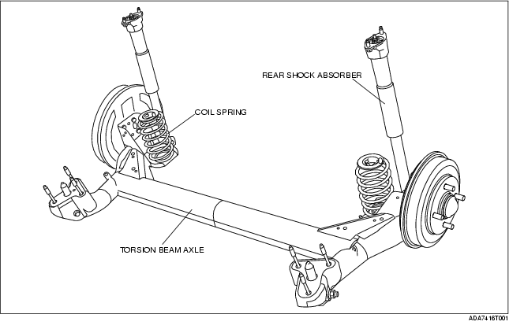

Mazda2
service manual
Search the manual
Home
Technical Guide
Suspension
Rear suspension
Rear suspension structural view
Rear suspension structural view

Previous
Rear suspension outline
Next
Rear shock absorber construction